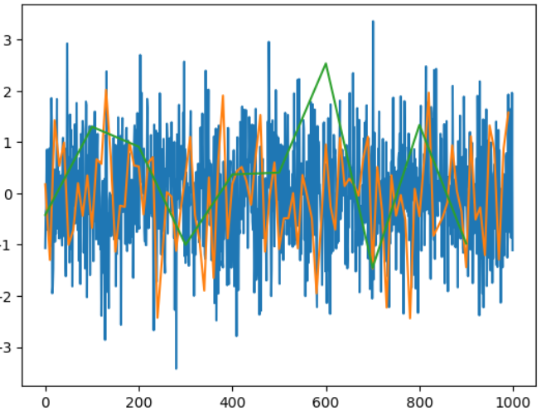
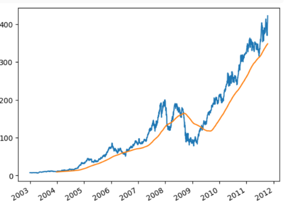
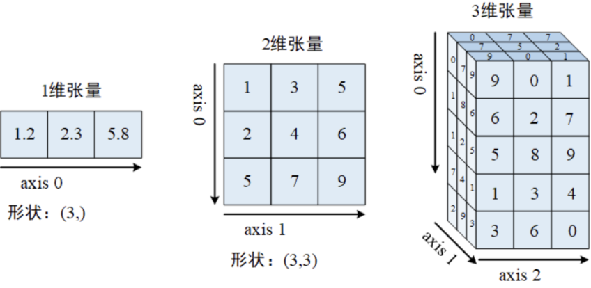

数据分析篇（下）
Matplotlib与可视化
matplotlib API入门
- 导入惯例
import matplotlib.pyplot as plt图片与子图、调用机制
- mat绘制的图位于图片对象中（Figure）
fig = plt.figure()
# 用fig.add_subplot()方法添加子图
ax1 = fig.add_subplot(2,2,1)
ax2 = fig.add_subplot(2,2,2)
ax3 = fig.add_subplot(2,2,3)
ax4 = fig.add_subplot(2,2,4)
# 绘制子图
ax1.plot(np.random.randn(50).cumsum(), 'k--')
ax2.hist(np.random.randn(500), bins=20, color='k', alpha=0.3)
ax3.scatter(np.arange(30), np.arange(30)+3*np.random.randn(30))
# 展示
plt.show()plt.show()为阻塞式调用方法，会释放内存中的所有图形资源，并阻碍下面代码的运行。（可以指定block=False改为非阻塞式调用）- 在使用内联绘图后端的 Jupyter Notebook 中，通常不用显式调用
plt.show()也能显示图像。 - 如果一次只创建一个图形，就不需要显式定义Figure对象
- 在使用内联绘图后端的 Jupyter Notebook 中，通常不用显式调用
fig1 = plt.figure(1) # 指定当前活动图形
plt.plot(np.random.randn(1000).cumsum()) # 将图形命令分配给Figure1
fig2 = plt.figure(2) # 重新指定当前活动图形为Figure2
plt.plot(np.random.randn(500).cumsum()) # ...
plt.show() #将内存中的Figure1和Figure2同时释放，并阻塞命令行plt.subplots(2, 2)一次创建一个 Figure 和四个 Axes，比逐个调用add_subplot()更直接。- 返回的
axes可按行列索引；左上角是axes[0, 0]。
- 返回的
fig, axes = plt.subplots(2,2)
# axes[0,0]：此处省略绘图代码
# axes[0,1]：此处省略绘图代码
# 略plt.subplots()其他选项sharex与sharey所有子图使用相同的x\y刻度figsize以元组*宽度，高度* 的形式传入dpi分辨率：默认值为100
plt.subplots_adjust()用于调整subplot子图周围的间距
plt.subplots_adjust(left=None, bottom=None, right=None, top=None, wspace=0, hspace=0)Figure对象与Axes对象
- Figure是顶层画布，相当于一张纸
- Figure对象常用属性和方法：
- figsize画布大小；dpi分辨率
- fig.add_subplot()添加子图
- fig.savefig()保存图片
- Figure对象常用属性和方法：
- Axes是图中的实际绘图区域，一个Figure对象中可以有多个Axes对象
- Axes对象常用属性和方法：
axes.plot()折线；axes.scatter()散点图axes.set_title()设置标题axes.set_xlabel()/ylabel()设置标签axes.set_xtick()/ytick()设置标签刻度
- Axes对象常用属性和方法：
pyplot的状态机接口机制
- 通过这一接口，用户可以快速绘图，而不需要显式创建和管理 Figure 和 Axes 对象。（适用于简单情况的）
- 例如：
plt.plot()：实际上是根据用户的需求隐式创建了axes对象，并对axes对象进行操作
颜色、标记和线类型
- plot函数接收带有x和y的数组，以及可选的字符串缩写参数来指明颜色和线类型。
ax.plot(x, y, 'go--') #marker必须在color后面
ax.plot(x, y, color='g', marker='o', linestyle='--') # 显式表达- 可以通过十六进制颜色编码指定颜色
drawstyle选项- 三种：steps-pre; steps-mid; steps-post
plt.plot(data, 'bo--', label='Default')
plt.plot(data, 'g-', drawstyle='steps-post', label='steps-post') #后跳步方式
刻度与标签
- 对axes对象：
fig = plt.figure()
ax = fig.add_subplot(1,1,1)
# 以下全部是axes对象方法
ax.plot(np.random.randn(1000).cumsum())
xticks = ax.set_xticks([0,250,500,750,1000])
xlabel = ax.set_xlabel('Stages')
xticklabels = ax.set_xticklabels(['one','two','three','four','five'], rotation=30, fontsize='small')
xtitle = ax.set_title('My first matplotlib image')- 或者，也可以通过
axes.set(**kwargs)传入：
props = {
'title':'My first image',
'xlabel':'Stages'
} # 参数字典
fig = plt.figure()
ax = fig.add_subplot(1,1,1)
ax.plot(np.random.randn(1000).cumsum())
ax.set(**props)图例
设置label参数
fig, axes = plt.subplots(1,1)
axes.plot(np.arange(1000),np.random.normal(0,1,1000), label='one')
axes.plot(np.arange(0,1000,10),np.random.normal(0,1,100), label='two')
axes.plot(np.arange(0,1000,100),np.random.normal(0,1,10), label='three')
创建图例
ax.legend()/plt.legend()方法
axes.legend(loc='best')- 如果希望调用ax.legend()方法时不生成某个图像的图例，不指定label或
label=‘nolegend’即可。
注解
ax.text();ax.arrow();ax.annotate方法- 下面的案例，可以学完时间序列回头看
from datetime import datetime # 这里注意导入方式
spx = data['SPX']
crisis_data = [
(datetime(2007,10,11),'Peak'),
(datetime(2008,3,12),'Bear Sterns Fails'),
(datetime(2008,9,15),'Lehman Bankruptcy')
]
fig, axes = plt.subplots(1,1)
axes.plot(spx, 'k-') # 黑色实线
for date,label in crisis_data:
axes.annotate(label, xy=(date, spx.asof(date)+75),
xytext=(date, spx.asof(date)+225),
arrowprops={'facecolor':'black',
'headwidth':4,
'width':2,
'headlength':4})
axes.set_xlim([datetime(2007,1,1),datetime(2011,1,1)])
axes.set_ylim([600,1800])将图片保存到文件
fig.fivefig()/ plt.savefig()fname指定文件名称dpi指定分辨率format指定格式bbox_inches要保存的图片范围，如果传递tight，则会去除掉空白部分
Axes图表方法
Series.plot()和DataFrame.plot()方法：是Pandas内建的简化可视化过程的方法。
折线图
- 基本语法：
Axes.plot(*args, **kwargs)
柱状图
- 基本语法：
Axes.bar(x, height, width=0.8, bottom=None, align='center', color=None, edgecolor=None, **kwargs)- x为分组，height为每组的高度
- width是每个柱的宽度
- bottom定义柱子在 y 轴方向上的起点，默认从 0 开始
- align控制柱子与xtick的对齐方式
- center即中心对齐
- edge为左对齐
- color为柱子的颜色，edgecolor为柱子边框的颜色
df = pd.DataFrame(np.random.randn(10,4).cumsum(0),
columns=['A','B','C','D'],
index = np.arange(0,100,10))
# 对df每组的sum进行柱状图统计
df_sum = df.sum(0) #Series类型
plt.bar(df_sum.index, df_sum)
# 或者，直接用Pandas内置方法
df_sum.plot.bar()
堆叠柱状图
- 基本原理：控制bottom参数，使第二组数据"堆叠"在第一组上
# 数据
cat = ['A', 'B', 'C']
g1 = [3, 5, 7]
g2 = [2, 4, 6]
g3 = [1, 3, 4]
fig, ax = plt.subplots(1,1)
ax.bar(cat, g1, color='blue', label='A')
ax.bar(cat, g2, color='red', bottom=g1, label='B')
ax.bar(cat, g3, color='orange', bottom=[i+j for i,j in zip(g1,g2)], label='C') # 注意这里列表推导式的使用
plt.legend(loc='best')
交叉柱状图
- 核心是重新定义n组X轴刻度位置，再重新标注刻度
fig, ax = plt.subplots()
#定义x轴位置与偏移量
width = 0.2
x = np.arange(len(cat))
# 作图
ax.bar(x - width, g1, width=width, label='Group 1', color='blue') # 第一组
ax.bar(x, g2, width=width, label='Group 2', color='green') # 第二组
ax.bar(x + width, g3, width=width, label='Group 3', color='orange')# 第三组
# 重新设置x轴刻度
ax.set_xticks(x)
ax.set_xticklabels(cat)散点图
- 基本语法：
Axes.scatter(x, y, s=None, c=None, marker=None, cmap=None, alpha=None, edgecolors=None, **kwargs)
直方图与密度图
直方图
axes.hist()方法
data = np.random.randn(1000000)
# 使用matplotlib绘制直方图
plt.hist(data, bins=30, color='blue', alpha=0.7) #bins指定了分组的数量
plt.title('Histogram using matplotlib')
plt.xlabel('Value')
plt.ylabel('Frequency')
plt.show()- 这里bins也可以传入区间边界，例如
bin = [-3, -2, -1, 0, 1, 2, 3]，实现分组
密度图
sns.kdeplot()方法
import seaborn as sns
sns.kdeplot(data, shade=True, color='red')
plt.title('Density Plot using seaborn')
plt.xlabel('Value')
plt.ylabel('Density')
plt.show()时间序列
日期和时间数据的类型
时间序列类型
- 时间戳Timestamp：具体的时刻
- 固定时期period：例如2007年1月或整个2010年
- 时间间隔interval：由起始和结束时间戳表示
time模块
- 提供简单低等级的时间操作
- 获取当前时间戳
time.time() - 程序暂停功能
time.sleep(second)
- 获取当前时间戳
datetime模块
- 高级别的时间操作
- 导入方式
from datetime import datetime- 获取当前时间
now = datetime.now()
now # datetime.datetime类型- 时间加减
date1 = datetime(2011,1,7)
date2 = datetime(2024,4,5)
delta = date2 - date1
delta.days # datetime.timedelta类型字符串与datetime类型的互相转化
- 使用str方法或者传递一个指定的格式给
strftime()方法对datetime对象或pandas的Timestamp对象进行格式化- %Y 四位年份， %y两位年份
- %m 两位年份
- %d 两位日期
- %H 24小时制小时，%I 12小时制小时
- %M 两位数的分钟
- %S 秒
stamp = datetime(2011, 1, 3)
stampstr = stamp.strftime('%Y-%m-%d')datetime.strptime()将字符串对象转化为datetime对象
datestrs = ['7/6/2011', '8/7/2017']
[datetime.strptime(x, '%m/%d/%Y') for x in datestrs]- dateutil包的parser.parse方法：能够解析大部分人类可理解的日期表示
- 参数
dayfirst=True显式表明日期在月份之前
- 参数
from dateutil.parser import parse
parse('JAN 31, 1997, 10:45 PM')
#>>datetime.datetime(1997, 1, 31, 22, 45)- pandas的
to_datetime()方法
idx = pd.to_datetime(datestrs + [None])
idx[2] #>>NaT(Not a Time)
pd.isnull(idx)
#>>array([False, False, True])时间序列基础操作
- Pandas中基础时间序列种类是由时间戳索引的Series，在Pandas外部通常表示为Python字符串或datetime对象
- 小案例：生成Index为2023年所有交易日的DateFrame，其他列随便编入一些数据
from datetime import datetime, timedelta
# 定义2023年证券交易所的假期（周末和法定节假日）
holidays_2023 = [
datetime(2023, 1, 1), # 元旦
datetime(2023, 1, 2), # 元旦调休
datetime(2023, 1, 21), # 春节前一天
datetime(2023, 1, 22), # 春节
datetime(2023, 1, 23), # 春节调休
datetime(2023, 1, 24),
datetime(2023, 1, 25),
datetime(2023, 1, 26),
datetime(2023, 1, 27),
datetime(2023, 4, 5), # 清明节
datetime(2023, 5, 1), # 劳动节
datetime(2023, 5, 2),
datetime(2023, 5, 3),
datetime(2023, 6, 22), # 端午节
datetime(2023, 9, 29), # 中秋节
datetime(2023, 10, 2), # 国庆节
datetime(2023, 10, 3),
datetime(2023, 10, 4),
datetime(2023, 10, 5),
datetime(2023, 10, 6),
]
# 设置起止日期
start_date = datetime(2023, 1, 1)
end_date = datetime(2023, 12, 31)
# 生成所有交易日
trading_days_2023 = []
current_date = start_date
while current_date <= end_date:
# 跳过周末和假期
if current_date.weekday() < 5 and current_date not in holidays_2023: # weekdays返回0-6的索引
trading_days_2023.append(current_date)
current_date += timedelta(days=1)
df = pd.DataFrame(np.random.randn(len(trading_days_2023)), index=trading_days_2023, columns=['A'])
df.index # 这些datetime对象被放入DatetimeIndex中- DatetimeIndex中的标量值是Pandas的Timestamp对象
索引、切片、子集
- 在进行索引时，可以选择基于标签和基于时间
# 以下三种方式等价
df.iloc[1]
df.loc['2023-01-03']
df.loc['20230103']- 切片操作
df.loc['2023-05'] # 五月所有的日期
df.loc[datetime(2023,6,4):] #2023年6月4日以后的日期
# 这个日期可以是字符串、datetime或者Timestamp， 日期可以不在数据的时间序列范围之内含有重复索引的时间序列
dup_ts.index.is_unique # 检查是否存在重复时间索引
grouped = dup_ts.groupby(level=0) # 实行聚合操作日期生成、频率转换、移动窗口
生成日期范围
- 用
pd.date_range(start='2023-03-09', periods=20, freq='D')生成从起始时间开始的 20 个日频时间点。
index = pd.date_range('2023-03-03','2024-05-06') # 指定起始日期
pd.date_range(start='2023-03-09', periods=20) # 指定期数freq的用法- D为每日，B为每工作日
- 在 pandas 3.x 中，使用
h（小时）、min（分钟）、s（秒）。 - ME（Monthend）、BME（BusinessMonthend）
- MS（MonthStart）BMS（BusinessMonthStart）
- W-MON、W-TUE（Week）从指定的星期开始每周
- WOM-1MON（WOM日期） 每月第几个星期几
- 日期偏移与倍数：例如：4H代表每四个小时
- 还有很多......
移动数据
ts.shift()方法：前移为负，后移为正（索引不变）- 通常用shift方法计算百分比变化，例如增长率：
ts/ts.shift(1)-1- 如果不指定
freq则会直接位移数据而产生缺失值，如果传递，则会位移时间戳
ts = pd.Series(np.random.randn(20), index=pd.date_range('1/1/2000', periods=20, freq='BME'))
ts.shift(1)
ts.shift(1, freq='BMS')重采样与频率转换
- 重采样指将时间序列从一个频率转换到另一个频率的处理过程，使用
resample()方法
monthly = ts.resample("ME").mean() # 时间戳按月末分组
monthly.index = monthly.index.to_period("M") # 结果索引改为月频 PeriodIndex
降采样与聚合
- closed指定了时间窗口哪边关闭
- label指定了重采样后的时间戳采用哪一侧的
- 可以使用
offset对结果索引做位移操作（注意不是loffset）
- 可以使用
- 例如：1min--5min的降采样：

升采样与插值
- 需要设置升频之后的插值方式，基本上和
fillna和reindex方法一致
df_hour = df_daily.resample("h").asfreq() # 不填充
df_hour = df_daily.resample("h").ffill() # 向前填充OHLC重采样
ts.resample(freq).ohlc()是 Pandas 中用于时间序列重采样的一种方法，ohlc 是Open, High, Low, Close 的缩写，主要用于处理金融时间序列数据（如股票价格或交易量）。- 调用后，pandas自动计算窗口期内的最大值、最小值、第一个值、最后一个值，并返回一个四列的Dataframe
ts.resample('5min').ohlc()通过时期进行重采样
本节待补。
移动窗口函数
- 移动窗口按顺序计算局部统计量，例如移动平均，用于观察趋势和短期波动。
rolling(250)使用最近 250 个观测，股票日线中通常对应 250 个有效交易日；rolling('250D')使用 250 日的时间跨度。整数窗口默认要求有完整窗口的观测数，时间窗口的min_periods默认是 1。
close_px_all['AAPL'].plot() # 苹果公司的股价
close_px_all['AAPL'].rolling(250).mean().plot() # 苹果公司股价最近 250 个日线观测的移动平均
aapl_std250 =close_px_all.AAPL.rolling(250, min_periods=10).std() # 计算滚动标准差（波动率）
# min_periods指定了最小的计算标准，如果不满足，则返回NaN

指数加权移动平均法 EWM
设 x_t 为当前观测，y_t 为指数加权均值。没有缺失值时，adjust=False 使用递推：
y_0=x_0,\qquad y_t=\alpha x_t+(1-\alpha)y_{t-1},\qquad \alpha=\frac{2}{\mathrm{span}+1}
span 控制衰减快慢，不是截断历史的固定窗口。默认 adjust=True 时，用指数衰减的历史权重，并用权重之和归一化：
y_t=\frac{\sum_{j=0}^{t}(1-\alpha)^j x_{t-j}}{\sum_{j=0}^{t}(1-\alpha)^j}
调用 ts.ewm(span=30).mean()；也可指定 alpha 代替 span。min_periods 控制产生结果所需的有效观测数。
# EWMA30与MA30的对比
aapl_px = close_px_all.AAPL['2006':'2007']
ma30 = aapl_px.rolling(30, min_periods=20).mean()
ewma30 = aapl_px.ewm(span=30).mean()
fig,ax = plt.subplots(1,1)
ax.plot(ma30, 'k-', label='MA30')
ax.plot(ewma30,'g--', label='EWMA30')
plt.legend(loc='best')
二元移动窗口函数——协方差与相关系数计算
rolling_corr()方法计算dataframe所有列与TS之间的协方差；rolling_cov()则是协方差
# returns为一个dataframe，spx_ret为标普500的return，意在每只股票与spx_ret之间的相关性
corr = returns.rolling(125, min_periods=100).corr(spx_rets)自定义窗口函数
rolling_apply() 方法
移动时区
（这个暂时用不到，先放下）
数据连接与透视
分层索引 hierarchical indexing
- 分层索引指的是在一个轴上拥有两个及以上的索引
data = pd.Series(np.random.randn(9), index=[['a','a','a','b','b','b','c','c','c'],[1,2,3,1,3,1,2,2,3]])
data.index # MutiIndex类型

data.loc['b'] # 进行部分索引
data.loc['b':'c']
data.loc[['b','a']]
data.loc[:,[1,2]] # 在内层中进行选取- 利用
stack和unstack在多层索引Series和DataFrame之间进行转换
data_unstack = data.unstack()
data_or = data_stack()
# 注意，不能存在重复索引，否则会报错- 对于DataFrame来说，每条轴都可以有分层索引
frame = pd.DataFrame(np.arange(12).reshape((4,3)), index=[
['a','a','b','b'],
[1,2,1,2]],
columns=[
['WW','WW','CC'],
['GG','GG','RR']
])
frame.index.names = ['key1','key2']
frame.index.names = ['state','color']
# 传入多层索引要使用**分层列表**的结构
- 单独创建MultiIndex并复用
columns1 = ['WW','GG','GG']
columns2 = ['aa','bb','cc']
pd.MultiIndex.from_arrays([columns1, columns2])索引交换
- 调整某条轴上各级别的顺序：
frame.swaplevel(0,1)
# 或
frame.swaplevel('key1','key2')- swaplevel常与sort_index连用：
frame.swaplevel(0,1).sort_index(level=0)
列与索引的转化
- 用set_index()将DataFrame的列转化为索引，用reset_index将索引还原到列中：
frame2 = frame.set_index(['a','b'], drop=True)
frame2.reset_index()数据集合并
merge操作（数据库风格）
df1 = pd.DataFrame({ 'A': ['A0', 'A1', 'A2', 'A3'],
'B': ['B0', 'B1', 'B2', 'B3'],
'key': ['K0', 'K1', 'K2', 'K3'] })
df2 = pd.DataFrame({ 'C': ['C0', 'C1', 'C2', 'C3'],
'D': ['D0', 'D1', 'D2', 'D3'],
'key': ['K0', 'K1', 'K2', 'K3'] })
result = pd.merge(df1, df2, on='key')- on参数用于指定连接键
- how参数用于指定连接方式

- 如果左表和右表的key列列名不同，可以这样操作：
result = pd.merge(df1, df2, left_on='key_of_df1', right_on='key_of_df2')- 多对多合并：例如df1中key有两个K0，df2中key有三个K0，合并后的key有六个K0
- 多键合并（略）
- 在进行列列连接时，原有的DataFrame索引会被丢弃
- 传入left_index=True或right_index=True来实现按索引合并
concat操作
- 与merge不同， concat是基于索引（标签）进行拼接的，没有了key的参与
s1 = pd.Series([0, 1], index=['a', 'b'])
s2 = pd.Series([2, 3, 4], index=['c', 'd', 'e'])
s3 = pd.Series([5, 6], index=['f', 'g'])
res = pd.concat([s1,s2,s3], axis=0)
res2 = pd.concat([s1,s2,s3], axis=1)

- 当拼接的方向存在重复索引时，可以指定join=或join_axes=指定参与的索引
- 可以指定
keys来区分参与连接的片段。
res = pd.concat([s1,s2,s3], axis=0, keys=['A','B','C'])
res2 = pd.concat([s1,s2,s3], axis=1,keys=['A','B','C'])
# 等价于下面这种方法
res = pd.concat({'A':s1,
'B':s2,
'C':s3},
axis=1)

- ignore_index = True用于不保留连接轴上的索引，产生一组新的索引
combine_first方法
- DataFrame.combine_first(other)，用other中对应的数据填充df1
np.concatenate方法
- 数组拼接的方法，要注意拼接的方向必须具有相同的形状
重塑与轴向旋转
- df.pivot()
- df.pivot_table()
pivot_table方法允许有重复索引，可以通过指定aggfunc= 参数指定聚合方式
- df.melt()
数据聚合与分组
主要是groupby方法